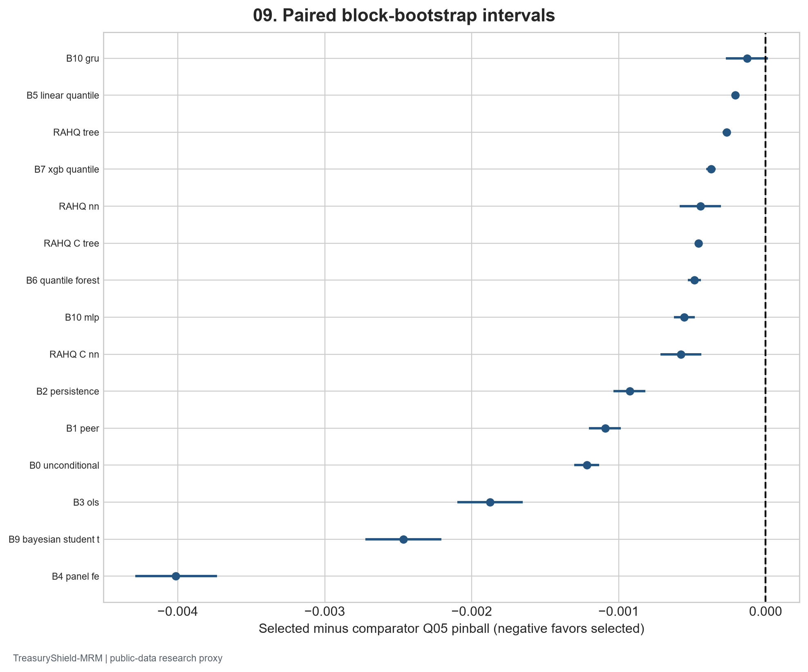

Frozen public-data snapshot fbc0b7b5a2c46fbcc0b5 | Generated 2026-09-27 UTC
The validator independently rejoined final predictions to source-derived future targets, recalculated quantile metrics, checked source and target clocks, and compared fixed challengers on identical bank-origin rows.
Public-data research on deposit-runoff tail forecasting and scenario sensitivity.
Core and Enhanced Call Reports, ALFRED/FRED, H.8, FDIC events, and separate FR Y-9C observations are documented in the data report. Harmonized bank histories are restated and lack exact amendment vintages; the 45-day public lag remains a material approximation.
Quantiles target conditional deposit growth rather than an internal cash-flow measure. All final prediction rows reconciled to the target table (30087 feature-clock joins; zero future-dated bank features and zero future ALFRED vintages). Predictions had no postprocessed quantile crossing.
Independent equations, source-target joins, frozen hashes, and public-availability clocks reconciled to the development warehouse.
| Model | Run ID | Q05 pinball | Q05 coverage | Q01 pinball | Median MAE |
|---|---|---|---|---|---|
| B8_lightgbm_quantile | core_B_1q_final_locked_B8_lightgbm_quantile | 0.004323 | 0.039951 | 0.001379 | 0.031580 |
| B0_unconditional | core_B_1q_final_locked_B0_unconditional | 0.005539 | 0.039419 | 0.002095 | 0.034607 |
| B1_peer | core_B_1q_final_locked_B1_peer | 0.005415 | 0.059660 | 0.002027 | 0.035383 |
| B2_persistence | core_B_1q_final_locked_B2_persistence | 0.005248 | 0.078938 | 0.001857 | 0.036698 |
| B3_ols | core_B_1q_final_locked_B3_ols | 0.006197 | 0.030046 | 0.002496 | 0.034883 |
| B4_panel_fe | core_B_1q_final_locked_B4_panel_fe | 0.008335 | 0.033769 | 0.003813 | 0.046161 |
| B5_linear_quantile | core_B_1q_final_locked_B5_linear_quantile | 0.004529 | 0.038854 | 0.001450 | 0.033263 |
| B6_quantile_forest | core_B_1q_final_locked_B6_quantile_forest | 0.004807 | 0.035597 | 0.001658 | 0.032088 |
| B7_xgb_quantile | core_B_1q_final_locked_B7_xgb_quantile | 0.004695 | 0.039286 | 0.001724 | 0.032583 |
| B9_bayesian_student_t | core_B_1q_final_locked_B9_bayesian_student_t | 0.006787 | 0.026623 | 0.002739 | 0.037080 |
| B10_mlp | core_B_1q_final_locked_B10_mlp | 0.004877 | 0.012730 | 0.001598 | 0.032213 |
| B10_gru | core_B_1q_final_locked_B10_gru | 0.004450 | 0.023100 | 0.001512 | 0.030551 |
| RAHQ_tree | core_B_1q_final_locked_RAHQ_tree | 0.004589 | 0.039951 | 0.001701 | 0.032257 |
| RAHQ_nn | core_B_1q_final_locked_RAHQ_nn | 0.004766 | 0.013694 | 0.001562 | 0.032556 |
| RAHQ_C_tree | core_B_1q_final_locked_RAHQ_C_tree | 0.004780 | 0.024629 | 0.001672 | 0.032718 |
| RAHQ_C_nn | core_B_1q_final_locked_RAHQ_C_nn | 0.004899 | 0.009107 | 0.001486 | 0.034940 |
| Reference model | Selected minus reference Q05 | Relative difference (%) | 95% low | 95% high | Bootstrap draws |
|---|---|---|---|---|---|
| B0_unconditional | -0.001216 | -21.946113 | -0.001301 | -0.001133 | 1000 |
| B1_peer | -0.001092 | -20.162644 | -0.001203 | -0.000985 | 1000 |
| B2_persistence | -0.000925 | -17.627527 | -0.001035 | -0.000819 | 1000 |
| B3_ols | -0.001874 | -30.241463 | -0.002098 | -0.001653 | 1000 |
| B4_panel_fe | -0.004012 | -48.135964 | -0.004290 | -0.003732 | 1000 |
| B5_linear_quantile | -0.000206 | -4.539941 | -0.000225 | -0.000185 | 1000 |
| B6_quantile_forest | -0.000484 | -10.060598 | -0.000529 | -0.000439 | 1000 |
| B7_xgb_quantile | -0.000372 | -7.926824 | -0.000405 | -0.000340 | 1000 |
| B9_bayesian_student_t | -0.002464 | -36.302370 | -0.002725 | -0.002207 | 1000 |
| B10_mlp | -0.000554 | -11.360117 | -0.000624 | -0.000481 | 1000 |
| B10_gru | -0.000126 | -2.842435 | -0.000270 | 0.000016 | 1000 |
| RAHQ_tree | -0.000266 | -5.802445 | -0.000292 | -0.000241 | 1000 |
| RAHQ_nn | -0.000443 | -9.293199 | -0.000584 | -0.000303 | 1000 |
| RAHQ_C_tree | -0.000457 | -9.560917 | -0.000473 | -0.000441 | 1000 |
| RAHQ_C_nn | -0.000576 | -11.762768 | -0.000715 | -0.000439 | 1000 |
| metric | quantile | weighting | value | n |
|---|---|---|---|---|
| pinball | Q05 | equal_bank | 0.004323 | 30087 |
| coverage | Q05 | equal_bank | 0.039951 | 30087 |
| pinball | Q50 | equal_bank | 0.015790 | 30087 |
| coverage | Q50 | equal_bank | 0.465949 | 30087 |
| mae | Q50 | equal_bank | 0.031580 | 30087 |
| weighted_interval_score | all | equal_bank | 0.022735 | 30087 |
| pinball | Q05 | deposit_weighted | 0.003164 | 30087 |
| coverage | Q05 | deposit_weighted | 0.014138 | 30087 |
| pinball | Q50 | deposit_weighted | 0.010063 | 30087 |
| coverage | Q50 | deposit_weighted | 0.490413 | 30087 |
| mae | Q50 | deposit_weighted | 0.020126 | 30087 |
| weighted_interval_score | all | deposit_weighted | 0.014634 | 30087 |
| pinball | Q05 | asset_weighted | 0.003192 | 30087 |
| coverage | Q05 | asset_weighted | 0.013844 | 30087 |
| pinball | Q50 | asset_weighted | 0.010085 | 30087 |
| coverage | Q50 | asset_weighted | 0.486106 | 30087 |
| mae | Q50 | asset_weighted | 0.020170 | 30087 |
| weighted_interval_score | all | asset_weighted | 0.014695 | 30087 |

The selected final Q05 pinball loss is 0.004323; empirical Q05 coverage is 0.0400 against nominal 0.0500. The largest quarterly coverage departure is 2024Q4 (0.0274, n=3790). These failures limit threshold interpretation even if aggregate pinball improves.
The final fixed roster was evaluated on 2024+ forecast origins after selection.
| Model | GFC Q05 | Pandemic Q05 | Tightening Q05 | Equal episode mean | Max coverage error | Improvement vs best simple (%) | Proposed prelock gate |
|---|---|---|---|---|---|---|---|
| B7_xgb_quantile | 0.007216 | 0.006221 | 0.006132 | 0.006523 | 0.031946 | NaN | None |
| B8_lightgbm_quantile | 0.006847 | 0.005943 | 0.005712 | 0.006167 | 0.032398 | NaN | None |
| B8_lightgbm_quantile adaptive | 0.006741 | 0.005969 | 0.006725 | 0.006478 | 0.107587 | NaN | None |
| B8_lightgbm_quantile adaptive | 0.006753 | 0.005959 | 0.006801 | 0.006505 | 0.111896 | NaN | None |
| B8_lightgbm_quantile adaptive | 0.006763 | 0.005846 | 0.006378 | 0.006329 | 0.064589 | NaN | None |
| RAHQ_C_tree | 0.007094 | 0.005993 | 0.007425 | 0.006837 | 0.123094 | -10.859463 | False |
| RAHQ_C_tree adaptive | 0.007105 | 0.005886 | 0.006820 | 0.006603 | 0.068741 | -7.069996 | False |
| RAHQ_C_nn | 0.006685 | 0.005489 | 0.007685 | 0.006620 | 0.162475 | -7.335818 | False |
| RAHQ_C_nn adaptive | 0.006706 | 0.005497 | 0.006695 | 0.006299 | 0.085223 | -2.136226 | False |
The crisis folds are deliberately heterogeneous; 2022–23 influenced prelock model selection. The final window is the sole untouched forecast-origin holdout. FDIC distress/failure and historical Y-9C results are secondary external-validity checks and do not establish causal failure prediction or direct holding-company portability.
| subgroup_family | subgroup | value | n |
|---|---|---|---|
| bank_size | large | 0.003818 | 900 |
| bank_size | medium | 0.003779 | 5518 |
| bank_size | micro | 0.006800 | 4356 |
| bank_size | small | 0.003943 | 19313 |
| business_model | brokered_funding | 0.005520 | 4138 |
| business_model | other | 0.004176 | 23173 |
| business_model | residential_lending | 0.003763 | 2776 |
| cash_to_assets | high | 0.004781 | 18329 |
| cash_to_assets | low | 0.003609 | 11758 |
| uninsured_proxy | high | 0.004455 | 20692 |
| uninsured_proxy | low | 0.004033 | 9395 |
| comparison_id | estimate | ci_low | ci_high |
|---|---|---|---|
| core_B_1q_final_locked_B8_lightgbm_quantile__vs__core_B_1q_final_locked_B1_peer__bank_cluster | -0.001092 | -0.001241 | -0.000943 |
| core_B_1q_final_locked_B8_lightgbm_quantile__vs__core_B_1q_final_locked_B1_peer__crossed_bank_and_circular_4q_block | -0.001092 | -0.001310 | -0.000894 |
| core_B_1q_final_locked_B8_lightgbm_quantile__vs__core_B_1q_final_locked_B7_xgb_quantile__bank_cluster | -0.000372 | -0.000428 | -0.000321 |
| core_B_1q_final_locked_B8_lightgbm_quantile__vs__core_B_1q_final_locked_B7_xgb_quantile__crossed_bank_and_circular_4q_block | -0.000372 | -0.000445 | -0.000299 |
| core_B_1q_final_locked_B8_lightgbm_quantile__vs__core_B_1q_final_locked_RAHQ_C_nn__bank_cluster | -0.000576 | -0.000633 | -0.000519 |
| core_B_1q_final_locked_B8_lightgbm_quantile__vs__core_B_1q_final_locked_RAHQ_C_nn__crossed_bank_and_circular_4q_block | -0.000576 | -0.000744 | -0.000414 |
The largest material final subgroup coverage departure is bank_size=medium: 0.0337 (n=5518).
Prelock missingness, stale inputs, measurement noise, Enhanced-panel, M&A, calibration, and bank-cluster/two-way bootstrap sensitivity are stored in the warehouse. Subgroup conclusions are qualified where direct uninsured fields are structurally absent.
Dependence, capital interaction, cash-only versus cash-plus-securities, reverse runoff, and recovery optimization were executed on the selected distribution. Public sources omit contractual capacity and depositor concentration, so action recommendations require internal data.
Breaking runoff frontiers and unreachable combinations are recorded separately by haircut and access assumption.
The historical policy study compares static, scheduled, quarterly recalibration, event-triggered, and performance-triggered procedures. It records alert duration, missed deterioration, false alerts, compute burden, input drift, and challenger disagreement. Live response times remain untested.
Escalation states require mature outcomes and explicit challenger review.
Source restatements, public-data coverage, time-block length, and scenario assumptions constrain interpretation.
| finding_id | pillar | severity | affected_use | materiality | recommendation | status |
|---|---|---|---|---|---|---|
| TS-F01 | Data quality / point in time | HIGH | Historical and prospective forecasts | Exact original Call Report filing and amendment vintages are unavailable; a 45-day public lag and restated bank values are used. | Acquire true filing vintages before production point-in-time use and rerun locked tests. | OPEN |
| TS-F02 | Data coverage | HIGH | Uninsured deposit segmentation | Direct FFIEC uninsured values have structural form-dependent gaps; Core history uses an insured-deposit proxy. | Restrict interpretation to reported fields and show proxy/direct results separately. | OPEN |
| TS-F03 | Outcome / calibration | MEDIUM | Q05 deposit-runoff alert thresholds | Final Q05 coverage 0.0400 versus nominal 0.0500; worst quarter 2024Q4 breach frequency 0.0274. | Review rolling recalibration, set conservative escalation limits, and validate on later untouched periods. | OPEN |
| TS-F04 | Model stability | MEDIUM | Proposed RAHQ-C selection | Proposed variants differ materially by crisis and horizon; calibration can worsen the tightening fold. The 3-state HMM's last tightening training likelihood step was -0.000160, a small negative step despite the library convergence flag. | Retain simple challengers, require all preregistered gates before promoting RAHQ-C. | OPEN |
| TS-F05 | Stress testing | HIGH | Liquidity and recovery decisions | Public Call Reports omit contractual cash flows, depositor concentration, collateral eligibility, intraday liquidity, and committed funding rights. | Treat PFN/reverse stress/recovery outputs as research proxies; obtain internal cash-flow and collateral data before action use. | OPEN |
| TS-F06 | External validity | MEDIUM | Failure inference and holding-company transfer | FDIC events are secondary labels; Chicago Fed BHC test ends in 2020 and is a distinct consolidated unit. | Do not pool BHC and bank rows; repeat external validation with current consolidated vintages if available. | OPEN |
| TS-F07 | Operational monitoring | MEDIUM | Alerting and retraining | Historical alerts and retraining policies are simulated using public data and fixed project thresholds; live lead time is unproven. | Shadow-run with outcome maturity checks and maintain escalation ownership before live use. | OPEN |
| TS-F08 | Subgroup outcome | MEDIUM | Bank-level segmentation | Worst material final group bank_size=medium has Q05 coverage 0.0337 (n=5518). | Review source coverage and group-specific tail errors before segment-level thresholds; retain equal-bank results alongside weights. | OPEN |
Each open finding names an owner and concrete evidence needed before use expands.
11 limitations are catalogued with affected interpretation in the limitations register. The project-specific use recommendation is ACCEPT WITH LIMITATIONS; findings remain open until independent remediation evidence is reviewed.
New York Fed harmonized Call Reports; FFIEC CDR; FDIC BankFind; Federal Reserve H.8; ALFRED vintages; Chicago Fed FR Y-9C. Exact downloaded URLs, retrieval times, and checksums appear in the raw manifest and desktop study.